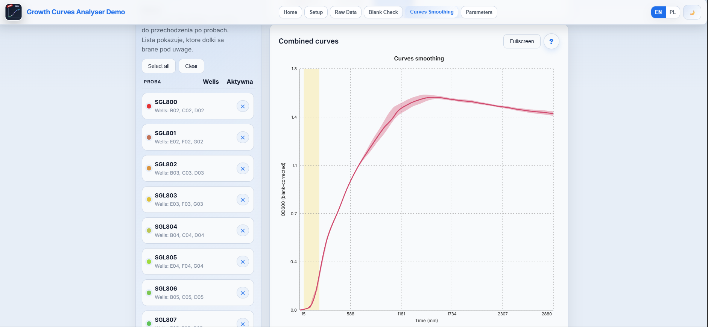

Bacterial Growth Curves Analyser
A fast, unified workflow for labs and students to inspect growth-curve datasets from different instruments without coding. Constructed to align with current consensus practices for early-stage analysis. Designed for lab users without programming or statistics background.
Show how to test
How to test the current demo (step-by-step)
- Open the Live demo and click Start workflow
- In the Setup tab, step "0. Import assignment"
- import the example assignment JSON file:
https://bacterial-growth-curves-analyser-pc0se7igi.vercel.app/examples/example-dataset.json - Scroll to the bottom of the Setup tab and click NEXT
- In Raw Data, click SEND TO BLANK CORRECTION
- At the bottom of Blank Check, click APPLY BLANK CORRECTION
- Scroll to the bottom of Blank Check and click NEXT
- At the top of Curves Smoothing, click LOESS (ALL)
- Click Next: Parameters
Key features
- Multi-format import (in progress) with standardized workflow.
- Assignment-driven steps for consistent analysis.
- Blank correction, QC, and LOESS smoothing.
- Growth parameters plus export options.
Status: active development (prototype / demo). If the example link does not load immediately, refresh once.
Planned improvements
- Language and layout consistency across the UI.
- Plot styling presets and imports.
- Statistical overlays: SD, CI, summaries.
- Bug fixes, stability, landing-page tutorial video.
- Support for more instrument export formats.
Workflow
Setup
Raw Data QC
Blank Correction
Smoothing
Parameters/Export

Tech stack: TypeScript, React, Vite.